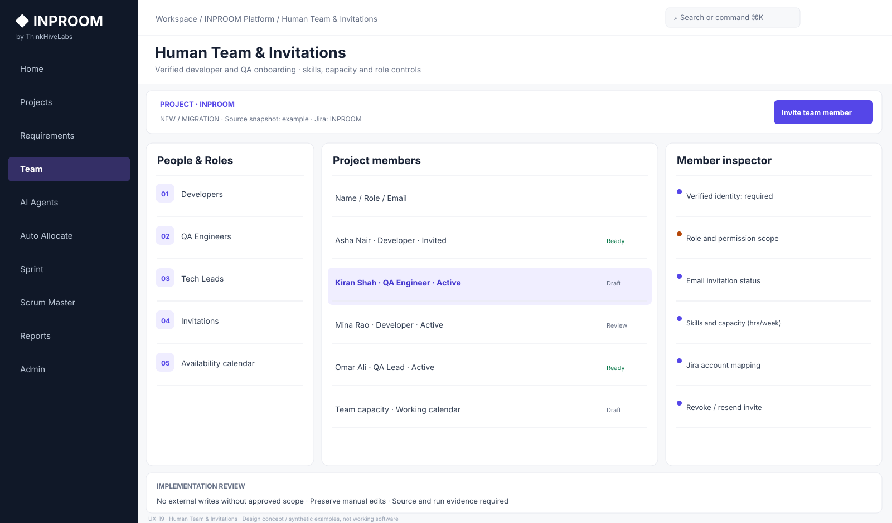

Human Team & Invitations
Five-screen interaction design for hybrid humans/AI delivery. Illustrative visuals; no backend actions.

These are not active forms, schedulers or agent services. See screen specs and testing requirements.
Five-screen interaction design for hybrid humans/AI delivery. Illustrative visuals; no backend actions.

These are not active forms, schedulers or agent services. See screen specs and testing requirements.